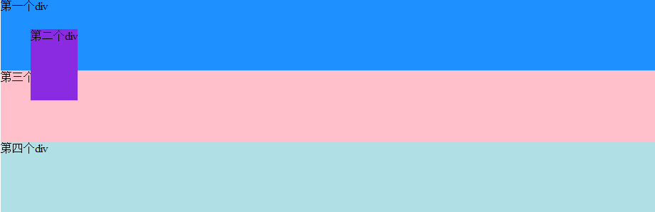

position属性
标准流（Normal Flow）
默认情况下，元素都是按照normal flow（标准流、常规流、正常流、文档流）进行排布的。
- 排布顺序：在浏览器中从左到右，从上到下顺序摆放；
- 默认情况下，元素互相之间不存在层叠现象；

什么情况下元素会脱标？
脱离标准流（简称“脱标”），那么什么情况下元素会脱离标准流呢？常见有以下两种：
- 元素设置position，并且position的值为fixed或absolute；
- 元素添加浮动float，并且float的值不为none；
脱标元素的特点
- 可以随意设置宽高，宽高默认由内容决定。
- 块级元素：在标准流下，默认占满父元素的宽度；脱标后，宽高由内容撑开。
- 行内元素：在标准流下，默认由内容撑开，且不能设置宽高；脱标后，宽高还是由内容撑开，但是可以设置宽高。
- 不再受标准流的约束。
- 不再给父元素汇报宽高数据，也就是不能将父元素撑开。
脱标和display有什么关系？
根据以上脱标元素的特点，可能会有人认为脱标其实就是将元素转换成了inline-block，因为其展示效果和设置display: inline-block;效果一致，但是其中的原因却不是这样。
当不同元素进行了脱标，对应会展示成display的何种属性值？在MDN和W3C官方网站上都有进行解释，并且提供了参考表格：
MDN中，以搜索float属性为例；

在W3C官方文档中，有关于display、position和float之间的关系进行了说明；

大部分元素在脱标后都会转换成block类型。
这里可以抛出一个疑问，block类型不是占据父元素的宽度么，为什么脱标元素最终是由内容撑开的？
解答：元素脱标后，已经不受标准流约束，其位置也是不局限在父元素之内，很难说父元素是谁，且块级（block）元素默认宽高都为auto，难以参考父元素宽度，所以最好的展示形式就是默认由内容撑开。
利用position可以对元素进行定位，常用取值有4个：
static
- static为position属性的默认值，在不设置position属性时就是static。
- 元素按照标准流进行排布（忽略 top, bottom, left, right 或者 z-index 声明）。
- 元素和元素之间不会重叠，这个位置就是元素的默认位置。
- 相邻元素都设置外边距，最终外边距=两者外边距中最大的。
- 左右外边距设置auto,这个块水平居中。
relative
- 元素按照标准流进行排布。而且占据的文档空间不会随 top / right / left / bottom 等属性的偏移而发生变动。
- 相对定位相对的是它原本在文档流中的位置而进行的偏移。
- 可以通过left、right、top、bottom来进行位置调整。
- 相对定位应用场景：在不影响其它元素位置的前提下，可以对当前元素位置进行微调。
absolute
- 元素脱离标准流（脱标）
- 定位参照对象是最近一级拥有定位的祖先元素（相对于static定位以外的第一个父元素进行定位），可以通过left、right、top、bottom来进行位置调整。
- 如果一直往上层元素找不到有定位的元素，那么最终的参照对象为浏览器窗口。
- 宽高由内容撑开。
- 包含块就是由它的最近的 position 的值不是 static 的祖先元素的内边距区的边缘组成。
fixed
- 元素脱离标准流（脱标）
- 生成绝对定位的元素，相对于浏览器窗口进行定位。元素的位置通过 “left”, “top”, “right” 以及 “bottom” 属性进行规定。
- 当浏览器窗口滚动时，元素的位置是固定不动的。
inherit
规定应该从父元素继承 position 属性的值。
子绝父相
在绝大多数情况下，子元素的绝对定位都是相对于父元素进行定位的，虽然给父元素的position设置relative、absolute、fixed都可以，但是如果不希望父元素脱标，常用解决方案是：
- 父元素设置position: relative;（让父元素成为定位元素，又不脱离标准流）；
- 子元素设置position: absolute;；
示例
1 | <body> |
添加背景色，效果如下：

给第二个div设置absolute
1 | .div2{ |
效果如图：

第二个div设置了absolute,则该div的宽度就由文本决定，且下面的div会上移占据之前第二个div的位置，top和left是相对于离它最近且不是static定位的父元素来定位的，在此div2因为没有父元素，所以第二个div相对于根元素即html元素来定位。
将第二个div设置为relative
1 | .div2{ |
效果如图：

设置relative的div不会影响其他div的位置，且top和left是相对于它原本自身的位置来定位。
给第二个div添加一个父div
1 | <body> |
1 | .container1{ |
效果如图：
div2的父div设置为absolute，下面的div3,div4会上移，div2也设置为absolute，div2就会相对于父div来定位。
若将div2即第二个div的absolute改为relative：
1 | .div2{ |
则效果图如下：

上面两个图的第二个div与父div的上边距是不同的，第一个是相对父div来定位，第二个是相对原来本身的位置来定位。可能此时你会注意到两个图的第二个div的宽度不同，在没有给div设置宽度的情况下，第一个是设为absolute，所以宽度为文本宽度，第二个是relative，所以宽度与父元素宽度相同。
若保持上面的两种情况，都将第二个div的宽度设为500px，得到效果如下：


由上图可以知道，absolute定位的子元素宽度不会影响父元素的宽，而relative定位的子元素会撑大父元素。
小结
Absolution：元素会脱离文档流，定位是相对于离它最近的且不是static定位的父元素而言，若该元素没有设置宽度，则宽度由元素里面的内容决定，且宽度不会影响父元素，定位为absolution后，原来的位置相当于是空的，下面的的元素会来占据。
Relative：元素仍处于文档流中，定位是相对于原本自身的位置，若没有设置宽度，则宽度为父元素的宽度，该元素的大小会影响父元素的大小。
绝对(absolute)定位对象在可视区域之外会导致滚动条出现。而放置相对(relative)定位对象在可视区域之外，滚动条不会出现。
使用absoulte或fixed定位的话，必须指定 left、right、 top、 bottom 属性中的至少一个，否则left/right/top/bottom属性会使用它们的默认值 auto ，这将导致对象遵从正常的HTML布局规则，在前一个对象之后立即被呈递，简单讲就是都变成relative，会占用文档空间，这点非常重要，很多人使用absolute定位后发现没有脱离文档流就是这个原因，这里要特别注意~~~
少了left/right/top/bottom属性不行，那如果我们多设了呢？例如，我们同时设置了top和bottom的属性值，那元素又该往哪偏移好呢？记住下面的规则：
- 如果top和bottom一同存在的话，那么只有top生效。
- 如果left和right一同存在的话，那么只有left生效。
祖先类的margin会让子类的absoulte跟着偏移，而padding却不会让子类的absoulte发生偏移。总结一下，就是absoulte是根据祖先类的border进行的定位。
无论父级盒子是正常显示还是以border-box显示，在没有规定left和top的属性值时，都呈现在父级盒子的内容区（不包含padding）左上角若规定了left：0；top：0；则统一相对父级盒子的左上角显示（包含padding）
当只给元素定义了position：absolute时，如果top, bottom, left, right都没有指定时，则left，top值与原文档流位置一致（当然了它是不占位的）。所以只设置了top属性而未设置left属性就造成了它在水平方向上仍然保持原有位置，而这个位置绝对不是left：0。实际上不论是何种定位，规则都如上所述。